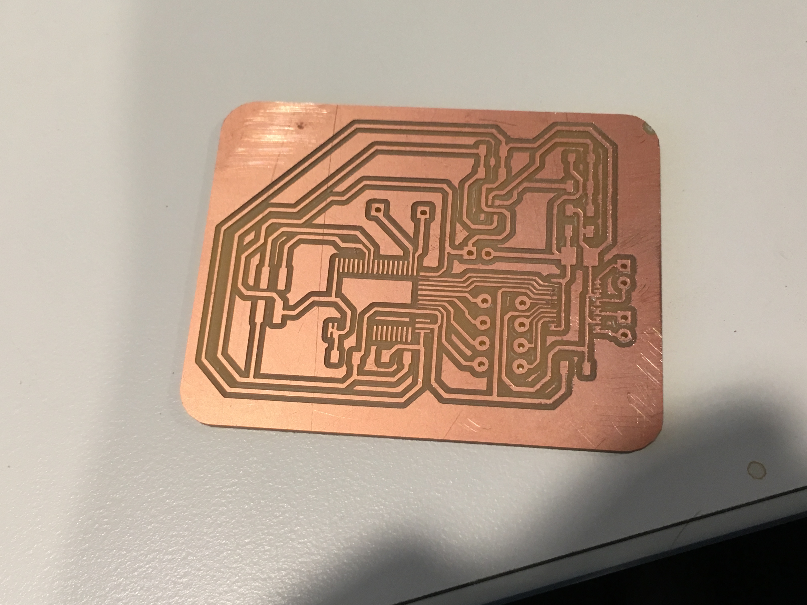

Attiny84
A few more pins than the Attiny85. 4 programming pins. 8 IO Pins
First_trial
Delayed turning on an LED light by 5 seconds
h-bridge simluation
2 Pins waiting for interupts linked to the breadboard button. Then will turn the corresponding LED's on
----------------------------------------------------------------------------------------------------------------------------------------
RC Car
IC'S
NRF51: Bluetooth IC part of the MDBT40 used in the MDBT40 module. Has bluetooth functions, 31 general IO pins, PWM, and other prebuilt services
TFNG H-Bridge IC that controls the motor logic
Milling and Making the board
Trial #0.5:
testing out the bluetooth chip, works pretty well!
Trial #1:
After the mill came out pretty well (with the occassional copper peeling). Then realized the TBFNG66 IC was not lining up. Accidentally misread the datasheet, and set the pin lengths too short (only accounted for the bent part that lay on the track). Redid the footprint, made sure to leave some extra room for soldering. Moral of the story: No harm no foul in extra long pins I guess.
Trial #2:
Unleashed the Magic Smoke!!!!! Really really wished I was recording... Realized I used an outdated version for the footprint of the voltage regulator. VCC was thus shorting out to ground. After quick modifications to the pins and also the traces,, went right down back to the fab lab for a quick mill.
Trial #3:
Debugging hardware is so hard! After frying the voltage regulator, resoldered everything. 6V was accidentally conncted to the last pin on the TBFNG66 as such, might have run 6V throught he bluetooth madule (which is btw 3 V higher than the maximum rating). Suspected that the TBFNG was fried, turns out the bluetooth module may be too. Dam..... now for some reason VCC and Ground are shorting.